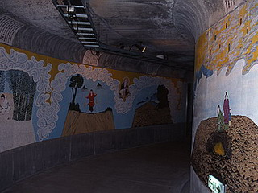

成田山久留米分院/福岡県久留米市
「それにしても日本中に大観音ってのは一体幾つあるんでしょうねえ。アレ、でかいから遠くからでも嫌でも目立つし、やっぱりその地域の人にしてみたら結構迷惑ながらもちょっぴり御自慢の一品といったところなんでしょうか。まあ、大抵の大観音ってのは外身が重要だから中身にはあんまり力入って無くて、階段を登ったりして一番上まで行っても何も無くって、後悔したりすることがほとんどなんだけど、私の場合珍寺めぐりという因果な趣味を持ってしまった以上、見かけたら行かない訳にはいかないのですよ。」
という訳で、久留米の成田山久留米分院である。メインは高さ62メートルの慈母大観音。だっこしている赤ん坊だけでも13メートル。13メートルの赤ん坊か・・・
白亳には直径３０ｃｍの純金の板に３カラットのダイヤモンドが１８個、胸には直径１０ｃｍの水晶（２０００カラット）とその周りに、５６個のヒスイが散りばめられているという宝石まみれの大観音、しかし下から見上げたってそんなものは見えやしない。それ以上に上を向いている赤ん坊の顔を確認してみたくなってきた。やっぱり登るしかないか・・・と思い、大観音を目指す。
なぜかチャイナテイスト満載の山門が架かる総大理石造りの階段を登り、千葉の成田山と同じくらい味気ない本堂を通りすぎ、大観音エリアに着く。
ここは大観音→地下洞窟→光明閣→大仏塔という順路で廻るようになっている。
その前座として大観音の周りにおわす陶器の五百羅漢が皆、吉田戦車の漫画みたいな顔で笑わせてくれる。

で、大観音。一階のジオラマ仕立ての「万人拝仏の図」と「動物拝仏の像」が凄い。「万人拝仏」の方は世界中の人々が仏様を拝んでいるのだが、あきらかにクリスチャンやモスリム、ヒンディーが混ざっている。ユダヤ教らしき人も仏様拝んでました。他の宗教の人が見たらまずくないかこれ。それに対して「動物拝仏」の方はモノが動物だけにイッツオーライ。パンダちゃんをはじめ様々な動物さん達の拝仏シーンという微笑ましいもの。どちらも色使いがケバいなあ〜と思ったら、台湾の信者さんの寄贈でした。
大観音の内部は螺旋階段で登る。途中申し訳程度の地獄絵などが飾ってあるものの、そんなものは見る余裕もない。ひたすらグルグルと登っていく。やっと登った頂上にはこれまた申し訳程度の千体仏が奉っているだけ。やっぱりここの大観音もこんなかあ〜。窓は小さく目当ての宝石も赤ん坊の顔も拝めない。外を眺めたって締まりのない久留米の街がダラーンと広がっているだけ。くたびれもうけか。仕方ない。下に降りよう。

前述の大観音の一階に戻りそこからまた階段を降りると孝養洞窟といわれる地下トンネル。

壁にまたしてもチャイナテイストたっぷりのケバいイラストで親孝行の物語や極楽図などが描かれている。その中になぜか笹川良一が婆さんをおんぶしている、あの有名なブロンズ像が。何故こんなところに絡む、笹川よ。
悪夢のようなトンネルを抜けるとそこは光明閣の地下一階。そこにあるのは宝石絵画館（とかいう名前だったと思う）。日本の歴史的事件などを宝石や天然石のモザイクで仕立て上げた力作の数々。原石のサンプルなども展示。よっぽどここは宝石が好きらしい。そして最後には日本の歴史的人物の宝石立体モザイク像。なんか菊人形の宝石版みたいで結構安っぽかったです。
地上に出ると待ち受けるのは平和大仏塔極楽殿。インドのブッダガヤの仏塔を模したというものでなかなか立派なもの。中には光ファイバーにより電飾されたお釈迦様などがあり、けっこう可笑しい。これで久留米成田山大観音ツアーはおしまい。


中国、インドなどの「本場もの」のかなり俗っぽい仏教様式などをフューチャーしたこの寺、しかし最終的にはメインはやっぱり大観音。やっぱりこの「大観音」というのは現代の日本の仏教独自の姿なんだなあ。
1998.2.
珍寺大道場 HOME